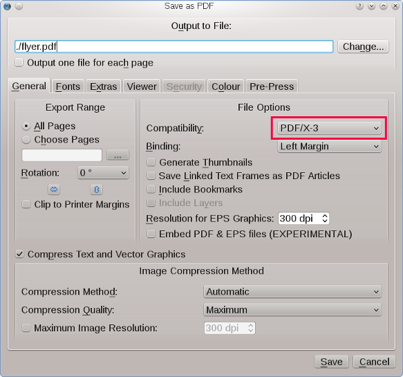
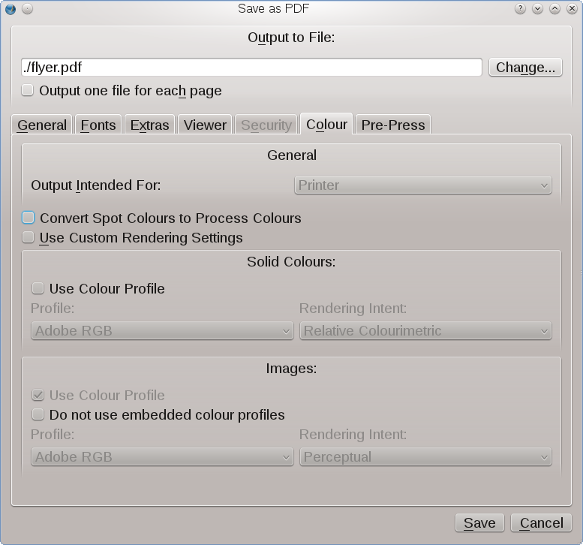
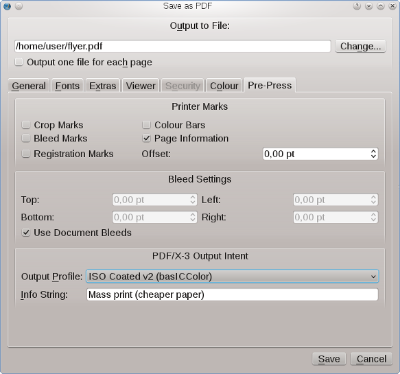

Support for PDF/X-3 was a major milestone in the development of Scribus. It was the first page layout application to support this demanding, but open ISO standard (ISO 15930-3:2002).
Creating commercial “press-ready” PDFs has historically been fraught with errors, especially for users unfamiliar with the nuances of PostScript, PDF distilling and varying capabilities of plate-setters or digital presses. The saying “It is hard to create a good PDF, but really easy to mess up” has a great deal of truth. The more common usage of the Adobe Acrobat Distiller family of applications for PDF creation has typically required knowledge of at least some of the close to 100 Distiller parameters.
In European countries, the concept of PDF/X has been more widely and earlier adopted than in North America. Much of the push for these standards has come primarily from German and Swiss companies, many of which are worldwide leaders in press and high-end digital imaging technology.
The creation of PDF/X is, in part, an attempt to provide end users and creators with a vendor-neutral measuring stick to vet files as suitable for professional printing or exchange with service bureaus. Essentially, PDF/X files are files that on the one hand only permit a certain subset of PDF features, and on the other hand make the enabling of others mandatory.
Scribus provides easily accessible options that enable end users to create 100 % X-3-compliant PDF files. By judicious use of PDF options, end users can be assured that their files will be 100 % standards compliant.
Before you export a PDF/X-3, make sure the file(s) you create can be used in the workflow of your printer or service bureau. Not all are equipped to handle PDF/X technology.
When you require very precise color reproduction and your printer will accept (or insist on) PDF/X-3 files. Without support from your printer, you are likely to have adverse color changes compared to more traditional PDF export.
The principal benefit of PDF/X-3 is the typically more accurate color conversion from RGB to a printer’s CMYK output. The accuracy comes from working in RGB colors until very late in the printing process when the printer’s own RIP does the RGB > CMYK conversion and by mandatory use of color profiles. Since the RIP engine has detailed knowledge of the exact color range, it is thought to offer, in most cases, an accurate conversion. PDF/X-3 does not preclude using CMYK images, but is ideal for maintaining your colors in RGB as long as possible in the process.
One question is which printer profile one should use. There are two strategies: The first is to have an actual ICC profile from your printing company for the matching paper type. The second is to use a well-known printing standard as SWOP, ECI or others. Using PDF/X-3 requires cooperation with your printer, but can really improve your print color matching. As always, a short visit to your printer in advance is strongly recommended. If answers are not forthcoming, try another one. Printing is a competitive business, and alternatives almost always can be found.
In the Document Setup make sure color management is enabled and the correct color profiles are chosen. Ideally, the color print profile matches either a standarized ISO printing condition or is a custom profile from your print provider. Without color management, you won’t be able to export to PDF/X-3. Then select File > Export …> Save as PDF … or click the PDF icon from the toolbar.
This panel will open first, and you have to select “PDF/X-3” from the “Compatibility” drop-down list as shown below. This will change the default settings, as needed, automatically.
|  |
Next, select the “Color” tab, as shown below:
|  |
Note that in the “Color” tab the general output target is greyed out. This is because in a PDF/X-3 workflow color space conversion to the printing device is supposed to happen as late as possible, which means it will be the printer who will do the final conversion, not you.
Next, select the “Pre-Press” tab, as shown below:
|  |
This is where you embed in the PDF the intended press condition, which is defined by the ICC color profile. It’s probably the most important choice in terms of color profiles, as it affects color throughout the whole workflow. You can also put in a short note about the document, which can be useful later on. This field cannot be left blank – as the PDF/X-3 specification requires it. Scribus will disable the “Save” button if the field is empty. You can also add other pre-press features like color bars or printing marks, but you should only do so if your printing company asks for them.
Note: Because of the strict requirements of PDF/X-3, some PDF features are disabled, including encryption and presentation effects; all fonts are automatically embedded or subset. Likewise, annotations and transparency won’t be exported.
http://www.pdf-x.com/downloads/pdf/application_notes_pdfx3.pdf